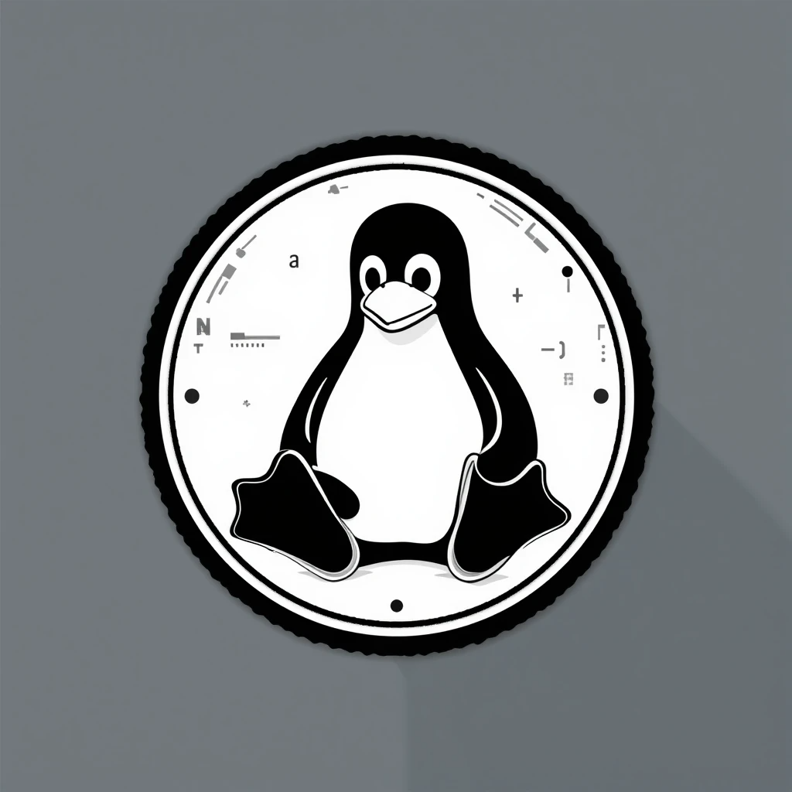

Estudante de Ciência da Computação na FAM, direciono minha trajetória para a área de Cibersegurança e Governança de TI (GRC), com foco em proteger, otimizar e fortalecer ambientes corporativos. Minha experiência envolve suporte técnico, administração de servidores, firewalls e segurança em nuvem, além de participação em projetos voltados para hardening de sistemas, análise de riscos e melhoria de desempenho em redes e infraestruturas críticas.
Tenho prática em análise de vulnerabilidades e testes de intrusão, utilizando plataformas como TryHackMe e Hack The Box, o que me permite explorar tanto a visão defensiva quanto ofensiva da segurança da informação. Trabalho com ambientes Linux (Kali, Ubuntu) e Windows, integrando ferramentas de monitoramento e proteção, além de desenvolver scripts e automações em PowerShell e BAT para aumentar a eficiência e reduzir riscos operacionais.
Minha atuação combina a parte técnica com o olhar estratégico de governança, buscando sempre alinhar tecnologia, compliance e boas práticas de mercado. Tenho conhecimento em normas e frameworks como ISO 27001, NIST e LGPD, e acredito que a segurança vai muito além da infraestrutura, é também uma questão de processos, cultura organizacional e resiliência corporativa.
Além do aspecto técnico, valorizo o aprendizado contínuo, a colaboração em equipe e a troca de conhecimento. Estou construindo uma carreira sólida em Cibersegurança e GRC, com o propósito de contribuir para ambientes seguros, escaláveis e preparados para os desafios digitais atuais e futuros.
Idiomas: Inglês avançado (leitura e escrita; intermediário em conversação) | Espanhol intermediário
Conquistei o pin "Meow has been Pwned" no Hack The Box ao realizar a exploração da máquina Meow. Experiência em pentesting, escalonamento de privilégios e análise de vulnerabilidades.

Badge "cat linux.txt", aprendizado prático de comandos Linux essenciais para cibersegurança e administração de sistemas Unix.